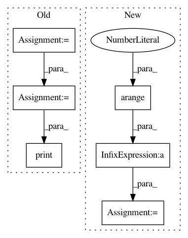

34e7e918bd4fc09f643e8bb448e875a9bcb7e841,experiment.py,,,#,4
Before Change
data = generate_data(0.20, "pandas")
for model in [BetweenOLS, PanelOLS, FirstDifferenceOLS, PooledOLS]:
formula = "y ~ 1 + x0 + x1 + x2 + x3 + x4"
if model is FirstDifferenceOLS:
formula = "y ~ x0 + x1 + x2 + x3 + x4"
joined = data.x
joined["y"] = data.y
mod = model.from_formula(formula, joined)
res = mod.fit()
print(res)
After Change
data = generate_data(0.00, "pandas")
import numpy as np
y = np.arange(12.0)[:,None]
import pandas as pd
entities = pd.Categorical(pd.Series(["a"]*6+["b"]*6))
dummies = pd.get_dummies(entities)
w = np.random.chisquare(5, (12,1)) / 5
w = w/w.mean()
root_w = np.sqrt(w)
wd = root_w * dummies.values
wy = root_w * y
b = np.linalg.pinv(wd) @ wy
In pattern: SUPERPATTERN
Frequency: 3
Non-data size: 6
Instances
Project Name: bashtage/linearmodels
Commit Name: 34e7e918bd4fc09f643e8bb448e875a9bcb7e841
Time: 2017-03-29
Author: kevin.k.sheppard@gmail.com
File Name: experiment.py
Class Name:
Method Name:
Project Name: rusty1s/pytorch_geometric
Commit Name: 05de5cfd5fe3953cdd50b1ec21f89e67d508f13f
Time: 2017-10-20
Author: matthias.fey@tu-dortmund.de
File Name: torch_geometric/nn/functional/spline_gcn.py
Class Name:
Method Name: weight_indices
Project Name: freelunchtheorem/Conditional_Density_Estimation
Commit Name: d576e71006c6cb20852c87093a3f03104fbcbb45
Time: 2018-03-28
Author: f4bio.ferreira@gmail.com
File Name: cde/evaluation_runs/question1_noise_reg/configuration.py
Class Name:
Method Name: